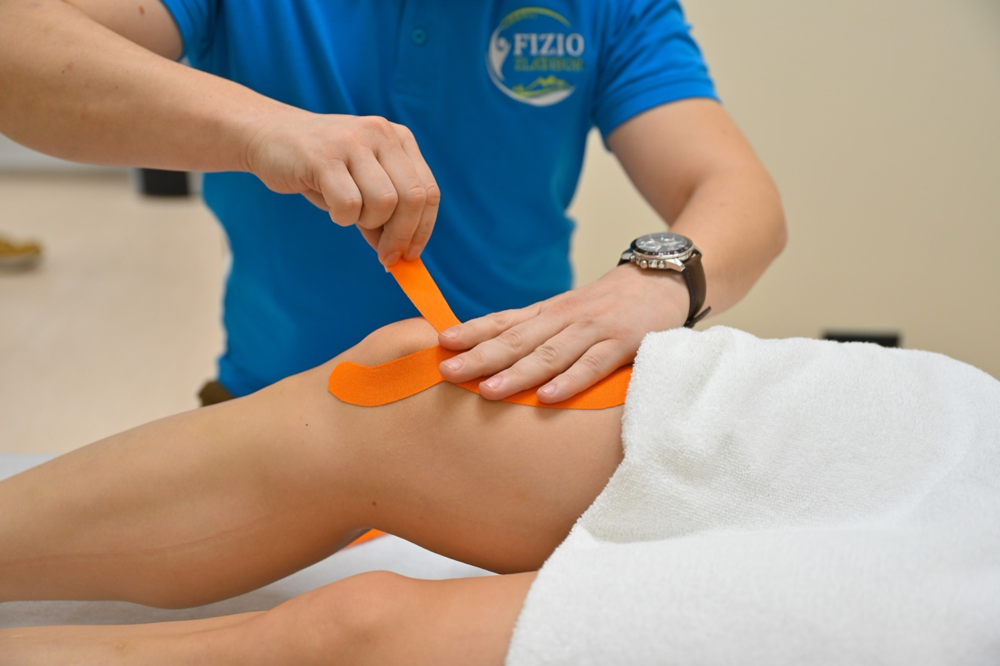
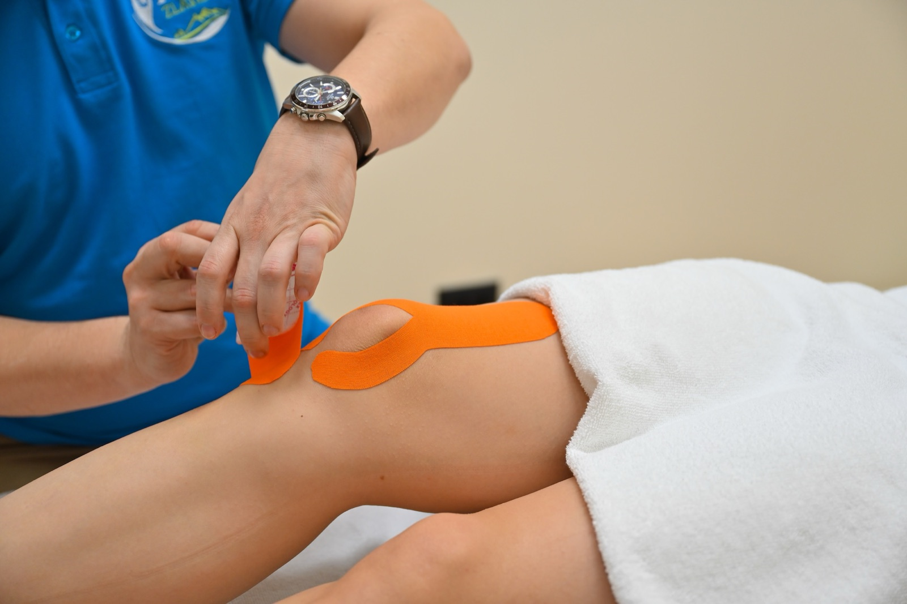

Kinezio tejping — podrška u pokretu, bez ograničenja
Verovatno ste već videli te šarene trake na ramenu trkača ili na kolenu fudbalera. Kinezio tejp je elastična traka koja se lepi na kožu u tačno isplaniranom pravcu — da rastereti bolan mišić, podrži zglob koji „popušta", pomogne otoku da se brže povuče ili samo nežno podseti telo na bolje držanje. Ne ograničava pokret — radi sa vama dok hodate, trčite, čak i plivate.

Kako izgleda tretman
Kratka procena
Pre nego što išta zalepimo, pogledamo kako se krećete, gde tačno boli i šta vam je cilj (trening, dugo stajanje, oporavak posle povrede).
Priprema kože
Mesto se očisti i, ako je potrebno, blago obrije po ivicama da tejp bolje drži. Sama aplikacija je brza — 5 do 10 minuta.
Lepi se u pravcu cilja
Tejp se reže i postavlja u tačno isplaniranoj šemi — za podršku mišića, drenažu otoka, stabilnost zgloba ili korekciju držanja.
Najbolje indikacije
Ako se prepoznajete u nekoj od situacija ispod, tejping je najčešće odlična, brza i nebolna podrška — sam ili kao dopuna fizioterapiji.
Bol, povrede i podrška u pokretu
- Bol u kolenu — patelofemoralni sindrom („prednji bol u kolenu") i tendinopatija patelarne tetive
- Teniski i golferski lakat (lateralni i medijalni epikondilitis)
- Tegobe sa Ahilovom tetivom — podrška tokom trčanja
- Bol u peti (plantarni fascitis)
- Bol u ramenu — rotatorna manžetna, posturalna podrška
- Bol u krstima i lumbosakralna podrška
- Tenzija u vratu i trapezijusu
- Uganuće gležnja posle akutne faze (propriocepcija — osećaj položaja zgloba)
- Rehabilitacija istegnuća zadnje lože buta (hamstrings)
- „Shin splints" — bol duž golenjače kod trkača
Otok, postura i drugo
- Smanjenje otoka posle operacije ili sportske kontuzije — limfna drenaža (drenaža tečnosti iz tkiva) kroz posebne šeme lepljenja
- Posturalna korekcija — okrugla ramena, isturena glava („texting neck")
- Dijastaza (razdvajanje pravih trbušnih mišića) i podrška karlici posle porođaja (uz saglasnost ginekologa)
- Bolne menstruacije — podrška donjem delu leđa i karlici
- Rad na ožiljnom tkivu posle operacije (na zarasle ožiljke, nakon skidanja konaca)
- Deca i adolescenti sa lakšim sportskim tegobama
- „Vikend sportisti" i trkači sa povratnim mikropovredama
- Ljudi u aktivnoj fazi rehabilitacije — tejp drži ono što ste izradili u sali
Koliko traje i kako se planira
Polazni okvir — sve podešavamo prema dijagnozi, fazi i vašoj aktivnosti.
- Trajanje sesije
- 10–20 minuta (sama aplikacija je brza — duže traje procena)
- Tejp ostaje na koži
- 3–5 dana, otporan na vodu i znoj
- Frekvencija
- jednom nedeljno tokom aktivne faze
- Tipičan paket
- 2–6 aplikacija, zavisno od problema
- Kombinacija
- odlično se slaže sa drugim tretmanima — često lepimo na kraju fizio sesije
- Ograničenje pokreta
- nema — možete normalno trenirati, plivati, raditi

Šta da očekujete
Najpre kratko pričamo o tegobi, pa pogledamo kako se krećete — gde boli, šta otežava trening ili svakodnevicu. Koža se očisti i, po potrebi, blago obrije po ivicama da tejp bolje prione. Trake se režu i lepe u isplaniranoj šemi prema cilju (podrška, drenaža, kontrola bola, korekcija držanja). Tejp ne bi trebalo da vas steže ili ograničava pokret — osećaj je više kao nežan podsetnik kože. Tuširate se, vežbate i plivate normalno. Posle 3–5 dana skidamo ga lagano, uz malo ulja ili tople vode, bez čupanja.
Kada tejping nije za vas
Tejp ne lepimo na: otvorene rane, kožu sa težom ekcemom ili psorijazom na mestu aplikacije, ili kod poznate alergije na lepak (uvek prvo testiramo malu traku 24 sata). Oprezno radimo kod izrazito proširenih vena, kod osetljive i tanke kože (stariji pacijenti, dugotrajna terapija kortizonom) — tada šemu prilagođavamo ili biramo drugi pristup. Sasvim sveže, akutne otoke uvek prvo treba pogledati lekarski, pre nego što se bilo šta lepi.